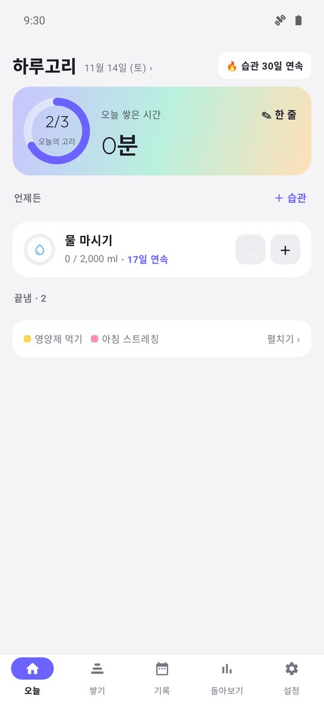
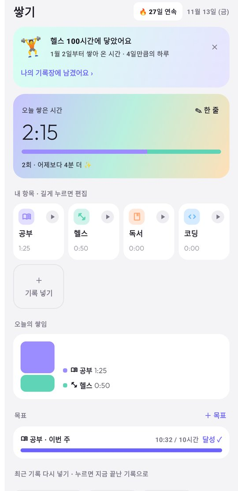
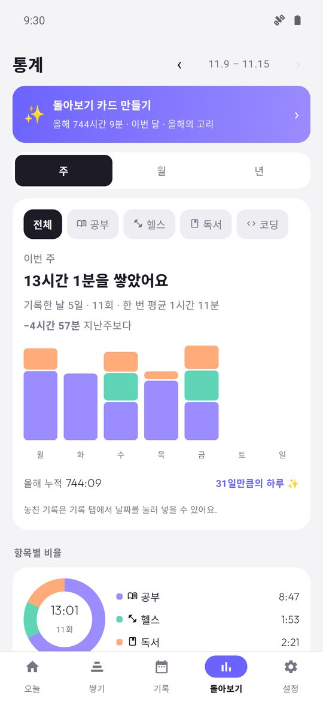
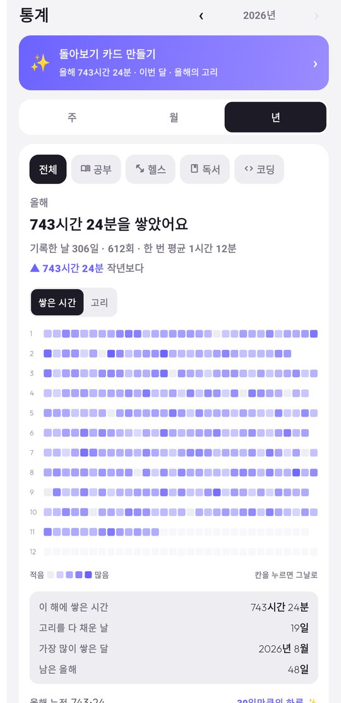

하루고리
지나간 시간을 돌아보고, 오늘을 쌓다.
매일 할 습관은 고리로 채우고, 공부·운동한 시간은 차곡차곡 쌓아서 돌아보는 안드로이드 기록 앱입니다.
회원가입 없음광고 없음기록은 내 기기에만자동 백업
앱 화면




이런 점이 좋아요
◯ 습관 고리
물 마시기, 영양제, 스트레칭처럼 매일 할 일을 꾹 눌러 채워요. 연속 기록과 달성률로 꾸준함을 확인해요.
▤ 시간 쌓기
공부·운동·독서를 누르면 타이머가 시작되고, 알림창과 잠금 화면에서도 계속 쌓여요. 끝난 일은 직접 넣을 수도 있어요.
▦ 돌아보기
주·월·년 통계와 연간 히트맵으로 내가 어디에 시간을 썼는지 한눈에 봐요.
✎ 하루 한 줄
오늘을 한 줄로 남기고, 1년 전 오늘의 한 줄도 다시 만나요.
♡ 헬스 커넥트
운동 앱·스마트워치의 운동 기록과 걸음 수를 가져와요. 허락한 경우에만, 기기 안에서만 읽어요.
▣ 위젯·다크 모드
홈 화면 위젯으로 바로 기록하고, 어두운 화면과 한국어·영어를 지원해요.
⇄ 폰을 바꿔도
같은 구글 계정 백업이나 백업 파일로 기록이 새 폰으로 옮겨져요. 평생 이용권은 같은 Google Play 계정이면 자동으로 복원돼요.
요금
무료
쌓기 항목 3개, 습관 3개, 목표 1개, 이번 주·지난주 통계, 헬스 커넥트 연동
평생 이용권
한 번 구매로 개수 제한 없이 모든 기능 — 월·년 통계, 누적 기록, 돌아보기 카드, 위젯
개인정보처리방침 · 문의 harilab.app@gmail.com
Harugori
Fill daily habit rings and stack up the time you put into study and workouts. See it by week, month and year, keep a one-line diary, and import workouts and steps from Health Connect. No sign-up, no ads — your records stay on your device.